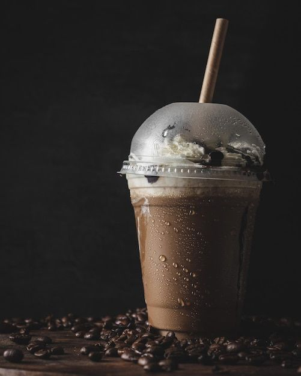

Cold Coffee

Description
Cold coffee is the perfect blend of refreshment and energy, combining the bold flavor of coffee with the creaminess of milk and the sweetness of sugar. Served ice-cold with a frothy top, it's an ideal drink for hot summer days or whenever you need a delicious caffeine boost.
For this recipe, we are making a rich and creamy café-style cold coffee that's blended until light and frothy. A scoop of vanilla ice cream makes it extra indulgent, while a drizzle of chocolate syrup and a dusting of cocoa powder take it to the next level.
Ingredients
For the Cold Coffee
- 2 tsp Instant Coffee Powder
- 2 tbsp Sugar (adjust to taste)
- 1 cup Chilled Milk
- 1 cup Ice Cubes
- 1 scoop Vanilla Ice Cream (optional)
Optional Flavorings
- 1 tbsp Chocolate Syrup
- ¼ tsp Vanilla Extract
- 1 tsp Cocoa Powder
For the Garnish
- Whipped Cream (optional)
- Chocolate Syrup (for drizzling)
- Chocolate Shavings or Cocoa Powder
Step-by-Step Instructions
-
Add the Ingredients
- In a blender, add the instant coffee powder, sugar, chilled milk, and ice cubes.
- Add the vanilla ice cream, chocolate syrup, and vanilla extract if using.
-
Blend Until Frothy
- Blend on high speed for 30 to 60 seconds until the coffee becomes smooth, creamy, and frothy.
- Taste and adjust the sweetness if needed.
-
Prepare the Glass
- Drizzle chocolate syrup around the inside of a tall serving glass for a café-style look.
- Pour the freshly blended cold coffee into the glass.
-
Garnish
- Top with whipped cream if desired.
- Drizzle with more chocolate syrup.
- Sprinkle chocolate shavings or cocoa powder over the top.
-
Serve
- Serve immediately while the drink is cold and frothy.
- Enjoy with a straw or a long spoon for the ultimate café experience.
Home
Pasta
Brownies